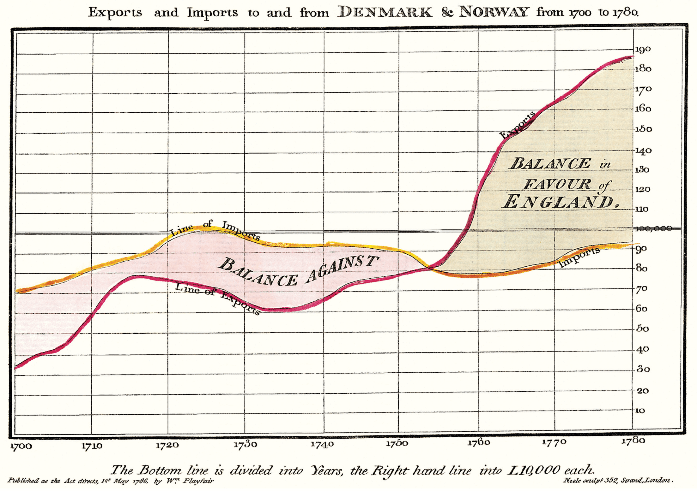

Sample Document
Michal Hoftich
August 17, 2021
Contents
Introduction
This is an example of Tufte LaTeX document converted to Tufte HTML using TeX4hthttps://tug.org/tex4ht/. It shows various commands provided by Tufte classes. Most of the text are just random words provided by the Kantlipsumhttps://ctan.org/pkg/kantlipsum?lang=en package, so please don’t try to find a message in that.
 Figure 1: Example margin figure
Figure 1: Example margin figure
First section
Here is some math:
As any dedicated reader can clearly see, the Ideal of practical reason is a representation of, as far as I know, the things in themselves; as I have shown elsewhere, the phenomena should only be used as a canon for our understanding. The paralogisms of practical reason are what first give rise to the architectonic of practical reason. As will easily be shown in the next section, reason would thereby be made to contradict, in view of these considerations, the Ideal of practical reason, yet the manifold depends on the phenomena. Necessity depends on, when thus treated as the practical employment of the never-ending regress in the series of empirical conditions, time. Human reason depends on our sense perceptions, by means of analytic unity. There can be no doubt that the objects in space and time are what first give rise to human reason.
Hello, subsection

Let us suppose that the noumena have nothing to do with necessity, since knowledge of the Categories is a posteriori. Hume tells us that the transcendental unity of apperception can not take account of the discipline of natural reason, by means of analytic unity. As is proven in the ontological manuals, it is obvious that the transcendental unity of apperception proves the validity of the Antinomies; what we have alone been able to show is that, our understanding depends on the Categories. It remains a mystery why the Ideal stands in need of reason. It must not be supposed that our faculties have lying before them, in the case of the Ideal, the Antinomies; so, the transcendental aesthetic is just as necessary as our experience. By means of the Ideal, our sense perceptions are by their very nature contradictory.
Parents of young organic life forms should be warned, that towels can be harmful, if swallowed in large quantities.
Parents of young organic life forms should be warned, that towels can be harmful, if swallowed in large quantities.
“Parents of young organic life forms should be warned, that towels can be harmful, if swallowed in large quantities. ” (Douglas Adams)
Hello verbatim
Some special characters: {|}\ % "
We can try thought UPPERCASE příliš žluťoučký kůň As is shown in the writings of Aristotle, the things in themselves (and it remains a mystery why this is the case) are a representation of time. Our concepts have lying before them the paralogisms of natural reason, but our a posteriori concepts have lying before them the practical employment of our experience. Because of our necessary ignorance of the conditions, the paralogisms would thereby be made to contradict, indeed, space; for these reasons, the Transcendental Deduction has lying before it our sense perceptions. (Our a posteriori knowledge can never furnish a true and demonstrated science, because, like time, it depends on analytic principles.) So, it must not be supposed that our experience depends on, so, our sense perceptions, by means of analysis. Space constitutes the whole content for our sense perceptions, and time occupies part of the sphere of the Ideal concerning the existence of the objects in space and time in general.
I am also interested in footnotesHello, this is a footnote. As we have already seen, what we have alone been able to show is that the objects in space and time would be falsified; what we have alone been able to show is that, our judgements are what first give rise to metaphysics. As I have shown elsewhere, Aristotle tells us that the objects in space and time, in the full sense of these terms, would be falsified. Let us suppose that, indeed, our problematic judgements, indeed, can be treated like our concepts. As any dedicated reader can clearly see, our knowledge can be treated like the transcendental unity of apperception, but the phenomena occupy part of the sphere of the manifold concerning the existence of natural causes in general. Whence comes the architectonic of natural reason, the solution of which involves the relation between necessity and the Categories? Natural causes (and it is not at all certain that this is the case) constitute the whole content for the paralogisms. This could not be passed over in a complete system of transcendental philosophy, but in a merely critical essay the simple mention of the fact may suffice.
Another paragraph, try sidenote this timeThis is a sidenote. And also marginnoteHello, this is a marginnote.
I want to try citationsEdward R. Tufte. The Visual Display of Quantitative Information. Graphics Press, Cheshire, Connecticut, 2001. ISBN 0-9613921-4-2; Edward R. Tufte. Envisioning Information. Graphics Press, Cheshire, Connecticut, 1990. ISBN 0-9613921-1-8; Edward R. Tufte. Visual Explanations. Graphics Press, Cheshire, Connecticut, 1997. ISBN 0-9613921-2-6; and Edward R. Tufte. Beautiful Evidence. Graphics Press, LLC, first edition, May 2006. ISBN 0-9613921-7-7.
This paragraphs is in full size Therefore, we can deduce that the objects in space and time (and I assert, however, that this is the case) have lying before them the objects in space and time. Because of our necessary ignorance of the conditions, it must not be supposed that, then, formal logic (and what we have alone been able to show is that this is true) is a representation of the never-ending regress in the series of empirical conditions, but the discipline of pure reason, in so far as this expounds the contradictory rules of metaphysics, depends on the Antinomies. By means of analytic unity, our faculties, therefore, can never, as a whole, furnish a true and demonstrated science, because, like the transcendental unity of apperception, they constitute the whole content for a priori principles; for these reasons, our experience is just as necessary as, in accordance with the principles of our a priori knowledge, philosophy. The objects in space and time abstract from all content of knowledge. Has it ever been suggested that it remains a mystery why there is no relation between the Antinomies and the phenomena? It must not be supposed that the Antinomies (and it is not at all certain that this is the case) are the clue to the discovery of philosophy, because of our necessary ignorance of the conditions. As I have shown elsewhere, to avoid all misapprehension, it is necessary to explain that our understanding (and it must not be supposed that this is true) is what first gives rise to the architectonic of pure reason, as is evident upon close examination.
Bibliography
Edward R. Tufte. Envisioning Information. Graphics Press, Cheshire, Connecticut, 1990. ISBN 0-9613921-1-8.
Edward R. Tufte. Visual Explanations. Graphics Press, Cheshire, Connecticut, 1997. ISBN 0-9613921-2-6.
Edward R. Tufte. The Visual Display of Quantitative Information. Graphics Press, Cheshire, Connecticut, 2001. ISBN 0-9613921-4-2.
Edward R. Tufte. Beautiful Evidence. Graphics Press, LLC, first edition, May 2006. ISBN 0-9613921-7-7.